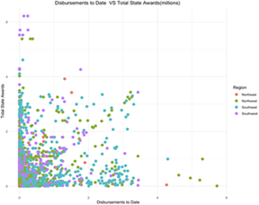
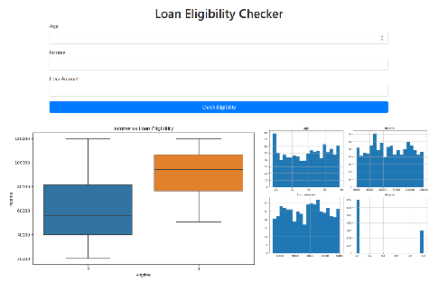
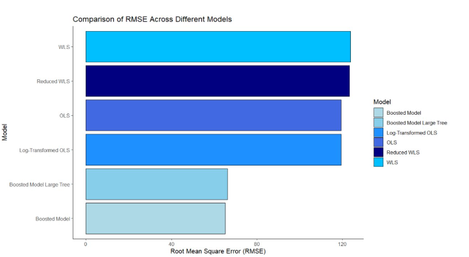
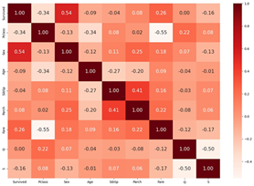
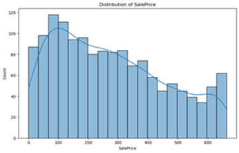
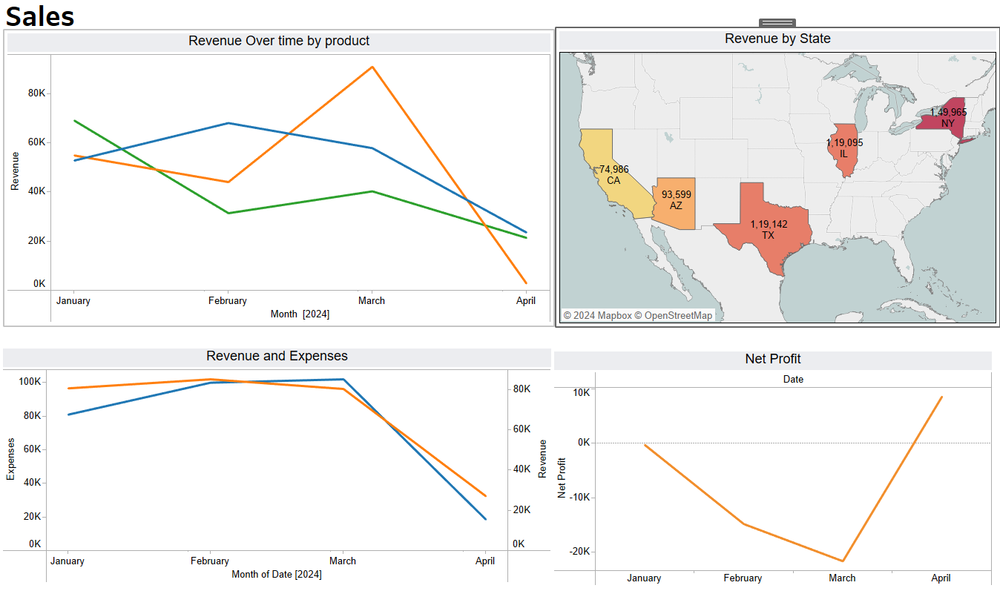
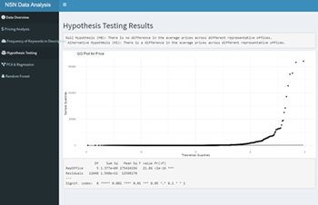

Name: Kritika Goyal
Profile: Data Scientist & GenAI Engineer
Email: kritika.gl[at]gmail[dot]com
Skills and Interests
Programming: Python, SQL, R
AI & GenAI: LLMs, Claude on AWS Bedrock, Agentic Frameworks, RAG, MCP, A2A, NL-to-SQL Agents, Prompt Engineering, NLP
Cloud & Data: AWS (Bedrock, ECS Fargate, Lambda, S3, Athena, RDS Postgres, OpenSearch), Terraform, Docker, Databricks/Spark
Full Stack & Tools: FastAPI, Flask, React, LangChain, PostgreSQL, Palantir Foundry, Tableau, Looker Studio, Excel
Machine Learning: Random Forest, Gradient Boosting, SVM, Neural Networks, Decision Trees, K-Means, PCA and more!
Statistical Analysis: Regression Analysis, Probability, Hypothesis Testing, Time Series Forecasting, Cluster Analysis.
Education: M.S. Analytics, American University (4.0 GPA, 2024); B.Tech, Electronics & Communication Engineering, Malla Reddy College (2020)
Certifications: Palantir Foundry Aware Professional, Databricks Fundamentals, Software Engineering for Data Science (IIIT Hyderabad), Future of Work Institute (Deloitte)
Awards: Google Hackathon (2nd), MIT Sloan First Pitch Case Competition (2nd), Kogod Case Competition (3rd), Deloitte Outstanding, Applause and Spot Awards
Interests: Hiking, Cooking, Poetry
About me
Hey there, I'm Kritika Goyal, a data scientist and GenAI engineer at Revolutional in McLean, Virginia, where I build AI products that turn complex healthcare and business data into tools people use every day. Before that, I spent three years on the Digital and Analytics team at Deloitte, interned at AARP, and earned my MS in Analytics at American University with a 4.0 GPA. At AU I was a graduate teaching assistant and the founding president of the AU Analytics Club, and I still love helping others grow, whether that's mentoring interns or running lunch-and-learns on new AI tools.
Growing up in the foothills of the Himalayas has deeply influenced my interests, particularly in hiking. Beyond the world of coding and analytics, I'm an all-around person with a zest for life. Whether I'm unraveling complex datasets or trekking up mountains, there's always a sense of curiosity and enthusiasm driving me. This space is not just about code; it's about sharing my journey as a proactive problem-solver, lifelong learner, and someone who finds joy in hobbies like reading and poetry.
Experience
Crafting Tomorrow, One Experience at a Time

Jr. Data Scientist - Revolutional
At Revolutional (formerly Harmonia Holdings Group), I design, build and deploy generative AI applications end to end, from the first prototype through the data pipelines and AWS cloud infrastructure that run them in production. My work spans federal health data platforms and internal tools, and along the way I mentor data science interns and teach colleagues about emerging AI agent standards.

Analytics Intern - AARP
As an Analytics Intern at AARP, I used SQL, Python, Tableau and Databricks to automate recurring reports, cutting manual effort by 30%, and built real-time campaign dashboards for outreach teams. My demographic segmentation analysis helped reduce outreach costs by 15%.

Graduate Teaching Assistant
Subjects: Managerial Statistics, Business Insights and Analytics
As a Graduate Teaching Assistant at American University Kogod School of Business, I taught labs on data cleaning, R programming and model validation for 30+ graduate students, held office hours, and helped shape course materials. It deepened my understanding of both teaching and analytical methods.

Senior Analyst - Deloitte
At Deloitte I was the primary data liaison for a large-scale HR analytics transformation spanning HR, IT and business operations. I automated offer management and reporting for 50,000+ candidates and employees, cutting manual effort by 50%, and delivered dashboards that cut reporting time by 40% across 20+ teams. Over three years I was promoted, led a team of four analysts, and received the Outstanding Award for the Data Integrations Project.
PROJECTS
Tech Tales: Navigating the Digital Odyssey


Public Investments Allocation in New York State
This project analyzes federal funding distribution in New York, focusing on small businesses and minority-related programs. OLS regression reveals disparities, emphasizing the need for equitable resource allocation and social equity.


Loan Eligibility Application
This project features a Flask web application that predicts loan eligibility based on user input. It employs a decision tree model trained on synthetic data and visualizes key metrics using boxplots and histograms for data analysis and presentation.


Decoding and Forecasting University Performance
Analyzing global university performance via Times Higher Education Rankings. Predictive models highlight critical predictors such as teaching quality, research output, and international outlook. Insights aid administrators in enhancing global standing and appealing to students.


Titanic Shipwreck Survival Analysis
This data engineering project involves analyzing Titanic shipwreck data, performing exploratory data analysis, implementing MLflow for experiment tracking, and building a supervised classification model with Random Forest for predicting survival. Hyperparameter tuning and metric logging are integral parts of the project.


House Price Prediction Project
This project aims to predict the final price of residential homes in Ames, Iowa, utilizing a dataset with 79 explanatory variables. The prediction model is built using machine learning techniques, with a focus on exploring PySpark and Scikit-Learn for data analysis.


Business Operations Dashboard
This Business Operations Dashboard, built in Tableau, provides interactive insights into HR, operations, marketing, sales, and customer data using synthetic datasets. It supports data-driven decision-making through comprehensive visualizations and KPIs.


NSN Data Analysis Project
This project analyzes NSN data to explore pricing patterns across representative offices, including data cleaning, EDA, hypothesis testing, predictive modeling (PCA, regression, Random Forest), and a Shiny app for interactive exploration.
Get in Touch
- kritika.gl[at]gmail[dot]com